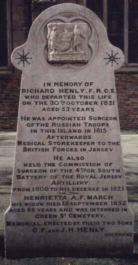

In memory of
Richard Henly, F.R.C.S.
who departed this life
on the 30th October 1821
Aged 53 years
He was appointed Surgeon
of the Russian troops
in this Island in 1815
Afterwards
Medical Storekeeper to the
British Forces in Jersey
He also
held the commission of
Surgeon of the 4th or South
Battery of the Royal Jersey
Artillery
from 1808 to his decease in 1821
Henriette A.F. March
His widow died 18 September 1852
aged 66 years and was interred in Green St. Cemetery.
Memorial, erected by their two sons
G.F. and J.H. Henly
Cochrane